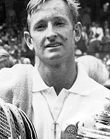
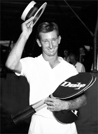

Rod Laver and The Mean Streak¶
Jeff McCullough¶

The man that launched a million backhands.
It was shortly after 11:00 P.M. on a warm winter evening. I was sitting in a window seat on a red eye that would take me from San Diego to Chicago, connecting to Washington D.C. Exhausted looking passengers were jockeying for overhead storage space. I was wishing that we would take off so I could have a drink.
Then to my amazement, a face suddenly appeared, the face of one of my greatest childhood heroes, a face that had launched a million topspin backhands. Was I really on the same airplane with arguably the best tennis player in history?
I watched mesmerized as Rod \"The Rocket\" Laver placed his carry on and his racquet carrying case into an empty overhead storage space a mere 15 feet ahead of me.
No one else recognized him, and truly, he looked ordinary. Seeing him now, it was no wonder that a security guard had recently denied the Rocket entrance into a charity tennis match he was to play at Indian Wells.
He had a grumpy and weary look, and I wondered where Rod Laver might be heading at 11:13 P.M. on a Thursday evening red eye, flying coach.
The Overhead Miss
Many years before I had seen a somewhat similar look on that same craggy, chiseled face. It was the most incredible occurrence I have ever witnessed on a tennis court.

Tom Okker: part of the most singular tennis point I ever witnessed.
The event was a World Team Tennis match against Tom Okker of the Netherlands in Oakland in 1975. Both the Rocket, at the age of 36, and the Flying Dutchman, at the age of 34, were still capable of playing impressive serve and volley tennis, especially under the perfect indoor conditions on a fast, low bouncing carpet.
The one set encounter was close. Laver held serve at 5-6 to take it into the tie-breaker. This was back in the days of the original 9 point tie-breaker with the first player getting five points winning. The boisterous fans became more vocal as the score progressed to 3-all, and then finally to 4-all, with just that one sudden death point to decide the outcome.
Laver sliced a nasty lefty serve down the middle in the deuce court to Okker's backhand and followed it into the net. Okker chipped the ball down the middle to Laver's backhand volley, but his return was a bit high. Okker broke to cover his backhand corner but Laver fooled him, volleying forcefully behind him deep into Okker's forehand corner.
Barely reaching the ball, Okker was able to throw up a short, low lob, a helpless duck. And there was Rod, only 4 or 5 feet from the net, ready to blast the ball into oblivion.
Rod swung really hard. The ball hit off the top of his frame and ascended spinning madly into the upper deck of the Oakland coliseum.
The audience was stunned. Could this have really happened? A collective groan echoed through the arena. One of the all-time greats had just missed one of the easiest shots of all time.
Rod immediately hung his head, muttering to himself. I saw a glazed look of pain and disbelief in his eyes.

How could a two time Grand Slam champion miss the easiest put away of all time?
Through the years that point had become particularly significant for me. It so beautifully illustrated the mystery of the game and it's mental challenges. Anything can happen out there to any player at any time.
I would tell the \"Laver story\" to students whenever one of them missed an easy shot on a big point. \"If it can happen to the 'Rocket,' it can happen to you. So lighten up.\"
I had to wonder if Laver remembered that point, and if it had some special significance to him also.
I remembered another plane flight, walking down the aisle to shake hands with Jack Nicklaus and telling him what an honor it was to meet him. He was incredibly indifferent and disinterested, but so what? If I could get up the nerve to introduce myself to Laver I could lay claim to the distinction of being perhaps the only person to ever run into both the world's greatest golfer and the world's greatest tennis player, randomly, on separate airplanes.
As I moved up the aisle, I could feel my heart really starting to pound. \"Hi Rod,\" I said politely, nervously forcing a smile. \"I'm Jeff McCullough. I just wanted to say 'hello'.\"
The look on Rod's face was affable as we shook hands. To my great relief, it appeared that he actually appreciated being recognized and greeted.
\"Hi Jeff,\" he said in his that distinctive Aussie accent. Yes, he actually called me by name!
Then suddenly I was so nervous that I thought my heart was going to blow up. So I said, reverentially, \"Well Rod, I just wanted to say 'hello.' It was really great to meet you.\" And I returned to my seat.

Jack Nicklaus: indifferent and disinterested but so what?
Immediately I had a strong sense of regret--maybe I should have stayed there and talked to him some more. After all, he seemed quite receptive and friendly. Maybe he was actually disappointed that I didn't perpetuate the conversation.
Wouldn't it be fabulous to have an exclusive interview with the great Rod Laver in the middle of the night at 30,000 feet?
Even though I was scared shitless, I was determined not to let this golden once in a lifetime opportunity vanish. And so I returned to Rod's seat.
\"Rod,\" I said, \"I don't wish to intrude on your privacy, but there's something I'd really like to ask you about--something I've wanted to know for a long time.\"
Immediately I could see he was less than compelled by my question. \"God, it's that same fricking guy again,\" his facial expression seemed to say.
But I persevered: \"Could you please wait for me outside the plane after we get off?\"
\"Oh...I guess so,\" he groaned, turning his head away.
Based on that response, I determined it was highly unlikely Rod Laver was going to wait for me in an airline terminal in the middle of the night. But I was now fully committed to making this \"interview\" happen.
So when we landed, I grabbed my old, faded green Prince bag and pushed my way down the aisle right past the Rocket and the other grid locked travelers.

A golden opportunity to interview the greatest of all time.
When Rod emerged from the plane eight minutes later, I was the one waiting for him--not the other way around.
\"You've probably slept on a lot of airplanes in your time,\" I said in my best kiss-ass tone of voice. His reply was a labored, sleepy scowl.
\"You got time for a beer?\" I ventured.
He looked at me out of the corner of his eye, shook his head in disgust and still didn't say a word. His politeness had vanished and Rod was suddenly moving so fast I realized his strategy was to outrun me.
The Mean Streak
\"Listen Rod,\" I said to the back of his head, \"when you were playing at your peak in the '60's and winning all those Grand Slam titles, did you approach your matches with the attitude of trying to win through guts and sheer force of will, or did you just attempt to bring out your best effort and play your best and let the chips fall where they may? You know, the way sports psychologists recommend?\"
Suddenly the Rocket hit the brakes. His shoulders stiffened, and he turned his head back and blasted me with a disdainful sneer.

Was a mean streak the difference?
\"Best effort?\" he spat out with what seemed like unmitigated disgust. And then he turned around and put on the after burners again.
Seeing that I was right behind, Rod began speaking out of the corner of his mouth. \"Best effort?\" he said again with the utmost conviction, \"Best effort was irrelevant because you could give your best effort and still lose.\"
\"Playing well and best effort didn't mean a thing to me. Winning was all that mattered.\"
\"I was completely motivated by my desire to win. I loved to win, and I hated to lose--to any of those other guys.\"
\"And besides,\" he continued with even greater fervor, \"I could only hope to play my best 30 or 40% of the time anyway. I had to find a way to win those matches where I wasn't playing my best.\"
As an avid student of sports psychology who had for years preached love of the battle as the primary motivation for all my students, my coaching foundation had just been severely shaken.
\"So you just did it all through sheer force of will and absolute determination?\" I asked. hoping and praying that I had misunderstood him. I was certain that I had.
\"Yeah,\" he said.
\"You see, I had a mean streak when I played that pushed me to want to win--to try to win--and avoid losing, at all costs.\"
\"That's all I cared about. Winning.\"

Winning and winning alone?
\"Back in my day we didn't need sports psychologists. Baby sitters and hand holders. Leeches. And if I was still playing, still wouldn't need guys like that.\"
I was stunned. \"Was that all?\" I asked.
\"Yeah,\" he repeated. \"I had a mean streak.\"
Then unprompted, he said it again: \"It was a mean streak,\" and his confident expression indicated that the term was the very best one available.
A quality of unconcealed pride and self-righteousness was beginning to emerge in his voice.
\"That was the difference between me and most of the other guys,\" he went on, talking out of the corner of his mouth, and glancing over at me out of the corner of his eye.
\"Sure, talent and good strokes are important too. But only to a degree. There were plenty of guys who had as much talent as I had and better strokes. But I knew how to win.\"
\"Yeah, I knew how to win,\" he said, with what now sounded like a tone of defiance.
I felt like I had been clubbed over the head with a hammer. I had in no way heard what I wanted to hear.
\"Best effort\" was an approach to the game which he clearly despised. And now the interview seemed over, as the Great One nodded, turned, and abruptly walked off in the direction of the nearest men's room across the concourse.
I stood motionless, watching dumbfounded as Rod Laver disappeared. Had I just received the most profound tennis lesson of my life?

Who in their right mind would chase Rod Laver down an airport concourse?
But as I began the long, forlorn sports psychology death march to try to find the gate for my flight to D.C., something dawned on me.
I had been so shocked by the Rocket's mean streak I had completely forgotten to ask about that world team tennis match. Did he remember what happened against Tom Okker? Did he remember that one incredible, horrendous shot?
Despite everything that had just happened I told myself I couldn't live unless I got the answer. So I did a violent 360, walked down the corridor and positioned myself directly in front of the door--the only door in or out of the men's room. I had Laver cornered again.
When Rod emerged and saw me his eyes popped out and I knew what he was thinking \"I can't believe it's him again!\"
He made a quick, hard left and accelerated to near sprint speed toward his connecting gate. Strangely, I was becoming accustomed to talking to the back of Rod Laver's head.
People moving in the opposite direction were now passing us in a blur. Several of them turned back and stared at us trying to figure out what the hell was going on: a short, balding red haired guy obviously trying to get away from a younger, taller, blonde pursuer.
\"Listen Rod,\" I said, \" there's just one other thing I wanted to ask you.\"
\"Do you remember a World Team Tennis match you played in 1975 against Tom Okker? The score went to 6-all in the set and then to 4-all in the tie-breaker? Do you remember Rod?\"

Rod with Billie Jean King, who was the originator of World Team Tennis.
He had suddenly veered hard left, heading in the direction of a coffee stand.
\"You served and volleyed at 4-all in the breaker and Okker lobbed back really short. The ball hit off the top of your racquet and went up into the upper deck.\"
The Rocket slowed down suddenly. Turning, he again glanced back at me out of the corner of his eye. I could see an unmistakable look of wonder on his face, a man whose memory had been profoundly jogged.
Then he looked at me with a funny little smile. I heard a barely audible laugh.
\"You know... I do seem to remember something like that...You say it was in '75...in Oakland...against Okker...yeah, that's how it was in Team Tennis...just one set...9 point tie breaker...yeah, well, I think so... but... hmmm... I'm not sure...\"
His words trailed off. I watched as he stirred his coffee. Then he walked slowly back past me, still smiling that funny little smile. The interview was truly over.
I forgot about the gate marked Washington D.C. and shuffled in the direction of a neon sign that read Destiny Cocktails. I had more than achieved the Nicklaus/Laver double.
But to this day I'm not entirely sure what the Rocket's smile really meant, or how it might have related to his belief in the power of the mean streak.